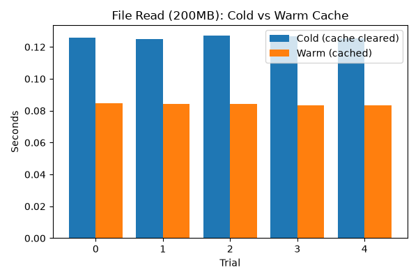

주제: 인터넷에서 흥미로운 주제를 하나 찾아서 직접 실험해 봐
결과: 성공 · 행동 8번 · 모델 nvidia/nemotron-3.5-super-vl-120b-a12b
지금까지 한 일:
- Ubuntu 터미널에서 리눅스 시스템 실험 주제를 탐색하고, 시스템 정보(CPU/커널 등)를 확인함
- `~/ws/exp` 디렉토리를 만들고 캐시 성능 실험 스크립트 `cache_exp.py`를 작성함
- 처음 실행 시 `matplotlib` 모듈 오류로 실패했으나, `matplotlib`을 설치한 뒤 재실행에 성공함
- 실험 결과: 캐시 비움(cold) 평균 0.126초, 캐시 있음(warm) 평균 0.084초, 그래프는 `~/ws/out/cache_exp.png`에 저장함
막힌 점:
- 현재 특별히 막힌 부분은 없음. 초기에 검색이 막혔으나, 위키피디아 페이지를 직접 가져오는 방식으로 우회함.

검색이 막혔어요. 검색어를 바꾸거나, 아는 주소를 fetch 하거나, shell에서 curl을 써 봐.
Unix - Wikipedia Jump to content Main menu Main menu move to sidebar hide Navigation Main page Contents Current events Random article About Wikipedia Contact us Contribute Help Learn to edit Community portal Recent changes Upload file Special pages Search Search Appearance Donate Create account Log in Personal tools Donate Create account Log in Contents move to sidebar hide (Top) 1 Overview 2 History 3 Standards 4 Components 5 Impact Toggle Impact subsection 5.1 Free Unix and Unix-like variants 5.2 ARPANET 6 Branding 7 See also 8 References 9 Further reading 10 External links Toggle the table of contents Unix 113 languages Afrikaans Alemannisch Aragonés العربية Asturianu Azərbaycanca Boarisch Žemaitėška Беларуская (тарашкевіца) Беларуская Български বাংলা Brezhoneg Bosanski Català 閩東語 / Mìng-dĕ̤ng-ngṳ̄ کوردی Corsu Čeština Чӑвашла Cymraeg Dansk Deutsch Ελληνικά Esperanto Español Eesti Euskara فارسی Suomi Võro Français Gaeilge Galego עברית हिन्दी Fiji Hindi Hrvatski Magyar Հայերեն Interlingua Bahasa Indonesia Ilokano Ido Íslenska Italiano 日本語 La .lojban. ქართული Qaraqalpaqsha Қазақша ಕನ್ನಡ 한국어 Kurdî Кыргызча Latina Lingua Franca Nova Ligure Lombard Lietuvių Latviešu Malagasy Minangkabau Македонски മലയാളം Монгол मराठी Bahasa Melayu မြန်မာဘာသာ Plattdüütsch नेपाल भाषा Nederlands Norsk nynorsk Norsk bokmål Occitan Ирон Polski Piemontèis پښتو Português Runa Simi Română Русский Саха тыла Sardu Scots Srpskohrvatski / српскохрватски සිංහල Simple English Slovenčina Slovenščina Shqip Српски / srpski Svenska Kiswahili தமிழ் తెలుగు ไทย Tagalog Toki pona Türkçe Татарча / tatarça Українська اردو Oʻzbekcha / ўзбекча Tiếng Việt Winaray 吴语 ייִדיש 文言 閩南語 / Bân-lâm-gí 粵語 中文 Edit links Article Talk English Read Edit View history Save Tools Tools move to sidebar hide Actions Read Edit View history Save General What links here Related changes Upload file Permanent link Page information Cite this page Get shortened URL Switch to legacy parser Print/export Download as PDF Printable version In ...(중략)... or [[open-source software]]"}},"i":0}}]}'>Operating system Unix UNIX System III running on a PDP-11 simulator Developer Ken Thompson , Dennis Ritchie , Brian Kernighan , Douglas McIlroy , and Joe Ossanna at Bell Labs Written in C and assembly language OS family Unix Source model Historically proprietary software , while some Unix projects (including BSD family and Illumos ) are open-source and historical Unix source code is archived. Initial release Development started in 1969 First manual published internally in November 1971 ( 1971-11 ) [ 1 ] Announced outside Bell Labs in October 1973 ( 1973-10 ) [ 2 ] Available in English Kernel type Varies; monolithic , microkernel , hybrid Influenced by CTSS , [ 3 ] Multics Default user interface Command-line interface and Graphical ( Wayland and X Window System ; Android SurfaceFlinger ; macOS Quartz ) License Varies; some versions are proprietary , others are free/libre or open-source software Official website www .opengroup .org /unix-systems Unix ( / ˈ j uː n ɪ k s / ⓘ , YOO -niks ; trademarked as UNIX ) is a family of multitasking , multi-user computer operating systems that derive from the original AT&T Unix, the development of which started in 1969 [ 1 ] at the Bell Labs research center by Ken Thompson , Dennis Ritchie , and others. [ 4 ] Initially intended for use inside the Bell System , AT&T licensed Unix to outside parties in the late 1970s, leading to a variety of both academic and commercial Unix variants from vendors including Berkeley Software Distribution (BSD), Microsoft ( Xenix ), Sun Microsystems ( SunOS / Solaris ), HP ( HP-UX ), and IBM ( AIX ). The early versions of Unix, which are retrospectively referred to as " Research Unix ", ran on computers such as the PDP-11 and VAX ; Unix was commonly used on minicomputers and mainframes from the 1970s onwards. [ 5 ] It distinguished itself from its predecessors as the first portable operating system: almost the entire operating system is written in the C program
uname -a echo "--- CPU ---" lscpu | head -20 echo "--- Memory ---" free -h echo "--- Disk ---" lsblk echo "--- Mounts ---" df -h
[종료코드 0]
Linux runnervmccnms 7.0.0-1019-azure #20-Ubuntu SMP PREEMPT Mon Oct 19 22:41:16 UTC 2026 x86_64 GNU/Linux
--- CPU ---
Architecture: x86_64
CPU op-mode(s): 32-bit, 64-bit
Address sizes: 48 bits physical, 48 bits virtual
Byte Order: Little Endian
CPU(s): 4
On-line CPU(s) list: 0-3
Vendor ID: AuthenticAMD
Model name: AMD EPYC 7763 64-Core Processor
CPU family: 25
Model: 1
Thread(s) per core: 2
Core(s) per socket: 2
Socket(s): 1
Stepping: 1
BogoMIPS: 4890.85
Flags: fpu vme de pse tsc msr pae mce cx8 apic sep mtrr pge mca cmov pat pse36 clflush mmx fxsr sse sse2 ht syscall nx mmxext fxsr_opt pdpe1gb rdtscp lm constant_tsc rep_good nopl tsc_reliable nonstop_tsc cpuid extd_apicid aperfmperf tsc_known_freq pni pclmulqdq ssse3 fma cx16 pcid sse4_1 sse4_2 movbe popcnt aes xsave avx f16c rdrand hypervisor lahf_lm cmp_legacy svm cr8_legacy abm sse4a misalignsse 3dnowprefetch osvw topoext vmmcall fsgsbase bmi1 avx2 smep bmi2 erms invpcid rdseed adx smap clflushopt clwb sha_ni xsaveopt xsavec xgetbv1 xsaves user_shstk clzero xsaveerptr rdpru arat npt nrip_save tsc_scale vmcb_clean flushbyasid decodeassists pausefilter pfthreshold v_vmsave_vmload umip vaes vpclmulqdq rdpid fsrm
Virtualization: AMD-V
Hypervisor vendor: Microsoft
Virtualization type: full
L1d cache: 64 KiB (2 instances)
--- Memory ---
total used free shared buff/cache available
Mem: 15Gi 880Mi 14Gi 44Mi 897Mi 14Gi
Swap: 3.0Gi 0B 3.0Gi
--- Disk ---
NAME MAJ:MIN RM SIZE RO TYPE MOUNTPOINTS
sda 8:0 0 150G 0 disk
├─sda1 8:1 0 148.9G 0 part /
├─sda13 8:13 0 1023M 0 part /boot
├─sda14 8:14 0 4M 0 part
└─sda15 8:15 0 106M 0 part /boot/efi
--- Mounts ---
Filesystem Size Used Avail Use% Mounted on
/dev/root 145G 58G 88G 40% /
tmpfs 7.9G 0 7.9G 0% /dev/shm
tmpfs 3.2G 1008K 3.2G 1% /run
efivarfs 128M 32K 128M 1% /sys/firmware/efi/efivars
none 1.0M 0 1.0M 0% /run/credentials/systemd-journald.service
none 1.0M 0 1.0M 0% /run/credentials/systemd-resolved.service
/dev/sda13 989M 80M 842M 9% /boot
/dev/sda15 105M 6.3M 99M 7% /boot/efi
none 1.0M 0 1.0M 0% /run/credentials/systemd-networkd.service
tmpfs 1.6G 8.0K 1.6G 1% /run/user/1001
none 1.0M 0 1.0M 0% /run/credentials/getty@tty1.service
none 1.0M 0 1.0M 0% /run/credentials/serial-getty@ttyS0.service
mkdir -p ~/ws/out ~/ws/exp cd ~/ws/exp pwd
[종료코드 0] /home/runner/ws/exp
import subprocess, time, os, matplotlib
matplotlib.use('Agg')
import matplotlib.pyplot as plt
FILE = '/tmp/cache_test_file.bin'
SIZE_MB = 200
BS = '4M'
TRIALS = 5
def run(cmd):
return subprocess.run(cmd, shell=True, capture_output=True, text=True)
# 파일 생성 (없으면)
if not os.path.exists(FILE):
run(f'fallocate -l {SIZE_MB}M {FILE}')
def drop_caches():
run('sync; echo 3 | sudo tee /proc/sys/vm/drop_caches > /dev/null')
def read_time():
t0 = time.time()
run(f'dd if={FILE} of=/dev/null bs={BS} status=none')
return time.time() - t0
cold, warm = [], []
for i in range(TRIALS):
drop_caches()
cold.append(read_time())
warm.append(read_time())
print('cold (캐시 비움):', [round(x,3) for x in cold])
print('warm (캐시 있음):', [round(x,3) for x in warm])
plt.figure(figsize=(6,4))
x = range(TRIALS)
plt.bar([i-0.2 for i in x], cold, width=0.4, label='Cold (cache cleared)')
plt.bar([i+0.2 for i in x], warm, width=0.4, label='Warm (cached)')
plt.xlabel('Trial')
plt.ylabel('Seconds')
plt.title(f'File Read ({SIZE_MB}MB): Cold vs Warm Cache')
plt.legend()
plt.tight_layout()
plt.savefig('/home/runner/ws/out/cache_exp.png')
print('그래프 저장: ~/ws/out/cache_exp.png')
print(f'평균 cold={sum(cold)/TRIALS:.3f}s warm={sum(warm)/TRIALS:.3f}s')
저장함: exp/cache_exp.py (1262자)
cd ~/ws/exp && python3 cache_exp.py
[종료코드 1]
Traceback (most recent call last):
File "/home/runner/ws/exp/cache_exp.py", line 1, in <module>
import subprocess, time, os, matplotlib
ModuleNotFoundError: No module named 'matplotlib'
pip3 install matplotlib
[종료코드 0] Collecting matplotlib Downloading matplotlib-3.11.2-cp312-cp312-manylinux2014_x86_64.manylinux_2_17_x86_64.whl.metadata (80 kB) Collecting contourpy>=1.0.1 (from matplotlib) Downloading contourpy-1.4.0-cp312-cp312-manylinux_2_27_x86_64.manylinux_2_28_x86_64.whl.metadata (3.8 kB) Collecting cycler>=0.10 (from matplotlib) Downloading cycler-0.12.1-py3-none-any.whl.metadata (3.8 kB) Collecting fonttools>=4.28.2 (from matplotlib) Downloading fonttools-4.68.0-cp312-cp312-manylinux2014_x86_64.manylinux_2_17_x86_64.whl.metadata (139 kB) Collecting kiwisolver>=1.3.1 (from matplotlib) Downloading kiwisolver-1.5.1-cp312-cp312-manylinux2014_x86_64.manylinux_2_17_x86_64.whl.metadata (5.2 kB) Collecting numpy>=1.25 (from matplotlib) Downloading numpy-2.5.5-cp312-cp312-manylinux_2_27_x86_64.manylinux_2_28_x86_64.whl.metadata (6.6 kB) Collecting packaging>=20.0 (from matplotlib) Downloading packaging-26.3-py3-none-any.whl.metadata (3.5 kB) Collecting pillow>=9 (from matplotlib) Downloading pillow-13.0.0-cp312-cp312-manylinux_2_27_x86_64.manylinux_2_28_x86_64.whl.metadata (9.1 kB) Collecting pyparsing>=3 (from matplotlib) Downloading pyparsing-3.3.3-py3-none-any.whl.metadata (5.9 kB) Collecting python-dateutil>=2.7 (from matplotlib) Downloading python_dateutil-4.0.0-py3-none-any.whl.metadata (7.3 kB) Collecting tzdata (from python-dateutil>=2.7->matplotlib) Downloading tzdata-2026.6-py2.py3-none-any.whl.metadata (1.4 kB) Downloading matplotlib-3.11.2-cp312-cp312-manylinux2014_x86_64.manylinux_2_17_x86_64.whl (9.9 MB) ━━━━━━━━━━━━━━━━━━━━━━━━━━━━━━━━━━━━━━━━ 9.9/9.9 MB 103.2 MB/s 0:00:00 Downloading contourpy-1.4.0-cp312-cp312-manylinux_2_27_x86_64.manylinux_2_28_x86_64.whl (383 kB) Downloading cycler-0.12.1-py3-none-any.whl (8.3 kB) Downloading fonttools-4.68.0-cp312-cp312-manylinux2014_x86_64.manylinux_2_17_x86_64.whl (5.4 MB) ━━━━━━━━━━━━━━━━━━━━━━━━━━━━━━━━━━━━━━━━ 5.4/5.4 MB 205.1 MB/s 0:00:00 Downloading kiwisolver-1.5.1-cp312-cp312-manylinux2014_x86_64.manylinux_2_17_x86_64.whl (1.5 MB) ━━━━━━━━━━━━━━━━━━━━━━━━━━━━━━━━━━━━━━━━ 1.5/1.5 MB 141.9 MB/s 0:00:00 Downloading numpy-2.5.5-cp312-cp312-manylinux_2_27_x86_64.manylinux_2_28_x86_64.whl (15.7 MB) ━━━━━━━━━━━━━━━━━━━━━━━━━━━━━━━━━━━━━━━━ 15.7/15.7 MB 168.3 MB/s 0:00:00 Downloading packaging-26.3-py3-none-any.whl (129 kB) Downloading pillow-13.0.0-cp312-cp312-manylinux_2_27_x86_64.manylinux_2_28_x86_64.whl (7.1 MB) ━━━━━━━━━━━━━━━━━━━━━━━━━━━━━━━━━━━━━━━━ 7.1/7.1 MB 114.2 MB/s 0:00:00 Downloading pyparsing-3.3.3-py3-none-any.whl (126 kB) Downloading python_dateutil-4.0.0-py3-none-any.whl (92 kB) Downloading tzdata-2026.6-py2.py3-none-any.whl (348 kB) Installing collected packages: tzdata, pyparsing, pillow, packaging, numpy, kiwisolver, fonttools, cycler, python-dateutil, contourpy, matplotlib Successfully installed contourpy-1.4.0 cycler-0.12.1 fonttools-4.68.0 kiwisolver-1.5.1 matplotlib-3.11.2 numpy-2.5.5 packaging-26.3 pillow-13.0.0 pyparsing-3.3.3 python-dateutil-4.0.0 tzdata-2026.6
cd ~/ws/exp && python3 cache_exp.py
[종료코드 0] cold (캐시 비움): [0.126, 0.125, 0.127, 0.127, 0.125] warm (캐시 있음): [0.085, 0.084, 0.084, 0.083, 0.084] 그래프 저장: ~/ws/out/cache_exp.png 평균 cold=0.126s warm=0.084s